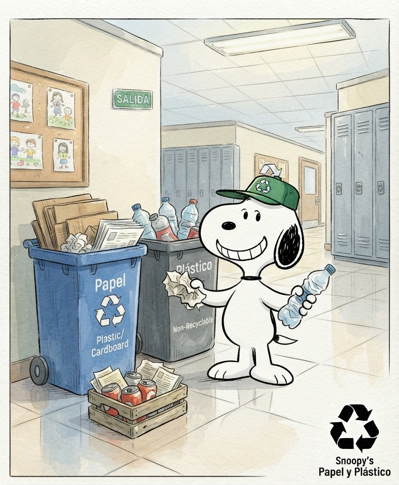

EPIK: Nuestra propuesta para salvar los espacios del colegio
¡Hola a todos! Bienvenida la comunidad educativa a nuestro blog oficial de EPIK (Eco Puntos Institución Kennedy) 💚.
Este proyecto nace directamente de lo que vivimos todos los días en el colegio: pasillos con envolturas, canecas de reciclaje llenas de comida revuelta y zonas verdes afectadas por la falta de conciencia. No queríamos quedarnos solo en la queja, así que decidimos crear una solución real y tecnológica.

¿Qué busca EPIK?
- Reciclar bien: Enseñar a clasificar desde la fuente (separar plástico, cartón y orgánicos).
- Tecnología a nuestro favor: Registrar cada entrega de material en nuestra plataforma web.
- Recompensas reales: Acumular puntos para entrar en el ranking y recibir incentivos de la huerta escolar.
¡El cambio empieza por cada uno de nosotros! Acompáñanos en esta iniciativa y haz que tu reciclaje cuente.